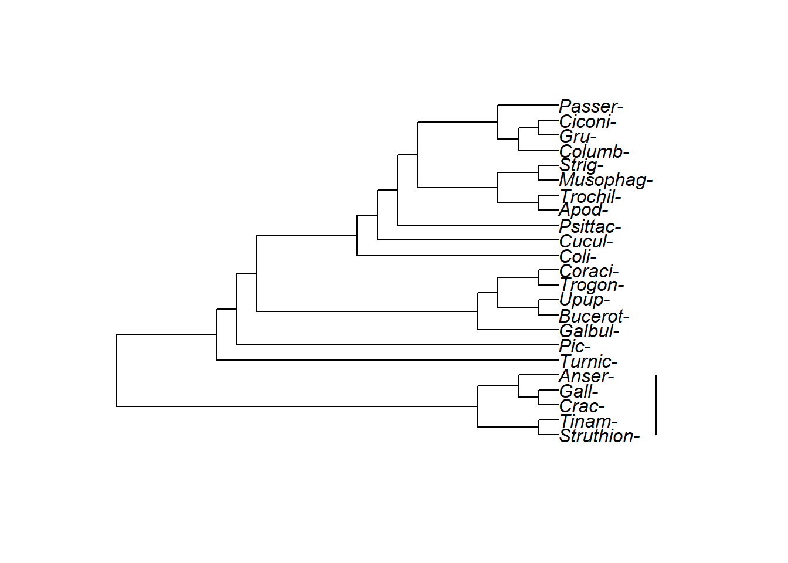

Chapter 3 “Reading guide Chapter 3: What a phylogenetic tree represents”
Chapter commentary
- Some sections can initially be skipped and will be assigned later
Gregory (2008) is an excellent and much more in-depth review of similar ideas. If you struggle with reading trees I recommend reading it. I have annotated copy online where I have highlighted the most important sections and provided commentary. The paper and figures are in seperate files and can be found here: https://drive.google.com/open?id=117qDPPLBhWrpi596LQMoVgCkNZQX5nye
3.1 Notes
- Key vocabulary are in bold below.
- Vocabulary that is good to be familiar with but is not essential is in in brackets [ ]
- There are several sections of this chapter that can be skipped.
3.2 Objectives
After reading this chapter you should
- Understand how to interpret ancestor-descendant relationships on a tree
- Know when two trees have the same topology, even if they are drawn differently
- Know the names of the major features of trees (root, branch, tips, etc)
- Know how to identify clades on a tree
- Know that a tree is just an estimate of the true evolutionary history, and so we need to represent uncertainty in our estimate (Eg with bootstrapping)
3.3 (Introduction)
3.4 “Continuity of reproduction from the population to the tree of life”
- tips (of phylogenetic tree): know how to identify the tips, where they are, what they are for a given tree
- lineage splitting
- [pedigree]
- [cladogenesis]
- [allopatric divergence]
- [sympatric divergence]
Figure2 3.1 to 3.5: These figures are useful conceptually but you won’t need to interpret figures like these
Figure 3.6: You need to know that the orientation of the tree (up or down) doesn’t matter
Figure 3.7: You need to know that these two ways of drawing a tree are equivalent.
3.5 “Asexual organisms”
Read this briefly; its interesting but not key.
3.6 “Tree terminology and conventions”
This stuff is really important. There likely will be a few basic questions on the test related to labeling or identifying the parts of the tree.
- branches (of phylogenetic tree): You should know what branches are, how they are drawn, and what differences in branch lengths mean. You should also know the different styles of drawing branches and be able to interpret them.
- edges (of phylogenetic tree): I will mostly likely not use the term “edges”, but it does appear in the literature and is the formal name used by math folks. If/when we talk about networks the term edges will become more important.
- directed (graph or tree): The terms directed and acyclic aren’t very important to understanding phylogenetic trees, but these terms will also come back if/when we talk about networks. Phylogenetic trees are directed because they represent a historical process and the passage of time.
- acyclic (graph or tree)
- tips: You should know what tips are and how they are drawn. I will call the ends of the tree “tips”, thought you may encounter other terms in other sources.
- [leaves]
- **[terminals**]
- root: You should know where the root of a tree is, or if a tree lacks a root and is unrooted (discussed later in chapter)
- Nodes: You should know where nodes are on a tree and know what they represent. You should also know how the placement of nodes relates to branch lengths.
- lineage splitting event: lineage splitting event result in genetic divergence.
- [internal branches]
- [internodes]
- [external branches]: This term occurs in the literature but I will usually just refer generically to branches.
- clade: You should be able to identify clades, be able to tell if a given set of tips for a clade, etc.
- monophyly: You should now whether a group is monophyletic or not.
- sister group: For a given tip, you should be able to identify its sister taxa.
- sister taxa
Figure 3.9 is a very good figure for understanding tree terminology. Tips, root, and branches are the most important terms.
Figure 3.10 is a classic illustration of a monophyletic groups versus a non-monphyletic group. Similar figures can also be found on the internet, eg Wikipedia.
3.7 “Tree topology”
- branching order (of phylogenetic tree)
- topology (of phylogenetic tree): You should be able to determine if two trees have the same topology or not
Figure 3.11 is important for understanding how trees can be rotated without impacting their topology.
Note: I do not (currently) use the “splits” format referred to on page 46.
3.8 “Different tree styles”
Goal: You should be able to interpret trees in all their shapes and formats. Circle trees are becoming increasinly common because they allow compact presentation of lots of data.
- [diagonal phylogenetic tree]
- [rectangular phylogenetic tree]
- [circle phylogenetic tree]
Figure 3.15 is important for seeing how different shapes and formats of trees can all have the same topology.
The following trees use bird order as the taxa on the tips of the tree. These naems are long so I removed the “iformes” that occurs at the end of each name.
A standard diagonal tree.
A standard rectangular tree. Struthioniformes are at the bottom: Can you tell what the sister group to the Struthioniformes is? Do Struthioniformes, Tinamiformes, and Craciformes make up a clade? How aboutthose three orders PLUS Galliformes and Anseriformes? What about those five orders plut Turniciformes? 
The exact same tree, pointed the other direction.
A circle tree representation. All of these trees have different systles but they have the same branching order and therefore the same tology.
3.9 “Merging and pruning” (SKIP)
This section can be skipped for now, but will be assigned later.
- pruning (a phylogenetic tree)
- merging (a phylogeneitc tree)
The concept of merging will become relevant when we talk about “distance-based” methods of phylogenetic tree reconstruction. Merging is involved in the algorithm for building these types of trees.
3.10 “The time axis” (SKIP)
This section can be skipped for now, but will be assigned later.
chronogram cladogram
Fossils are very important for establishing dates. We won’t spend much time talking about fossils; instead, we will talk about the use of molecular clock methods. These methods, however, have important limitations. The best way to add dates to tree is to use fossils.
3.11 “Branch lengths & evolutionary rate” (SKIP)
branch lengths (of phylogenetic tree) [phylograms]
Branch lengths and how they are estimated will be a very important consideration when we begin building phylogenies using mathematical models such as distance-based methods and maximum likelihood. In contrast, the parsimony methods some people learn in intro biology and evolution classes preclude consideration of branch lengths.
3.12 “Communicating phylogenetic uncertainty” (SKIP)
This section can be skipped for now, but will be assigned later.
[binary tree] [ancestral lineage] [descendant lineage] dichotomous tree [fully resolved phylogenetic tree] polytomy [hard polytomy] [soft polytomy] consensus tree [input tree] strict consensus tree
3.12.1 “Consensus trees” (SKIP)
This section can be skipped for now, but will be assigned later.
The section on consensus trees is important for being able to interpret published trees. Looking at a tree you should be able to identify if there are polytomies, know what they imply, and determine from information in the paper why it is there.
If time allows we will discuss how consensus trees are built; several key types of algorithms and computational techniques are used to build them (Sul and Williams 2011).
3.12.3 “Characterizing uncertainty” (SKIP)
This section can be skipped for now, but will be assigned later.
bootstrap percentages bootstrap scores posterior probabilities **[clade credibilities**]
This section is very important. We will discuss the computational details of bootstrapping and the interpretation of uncertainty measures.
3.13 “Unrooted trees”
This section can be skipped for now, but will be assigned later.
rooted tree unrooted tree bipartitions outgroup molecular clock
3.14 Tree-to-tree distances
This section is optional.
3.15 Chapter 3 Quiz
3.15.1 Intro bio
The following questions are mostly relevant for intro biology students, but may be useful for computational biology students to review.
1, 3, 4, 5, 7, 10, 11, 13
3.15.2 Computational biology
These questions are highly relevant to computational biology students.
17, 18, 19